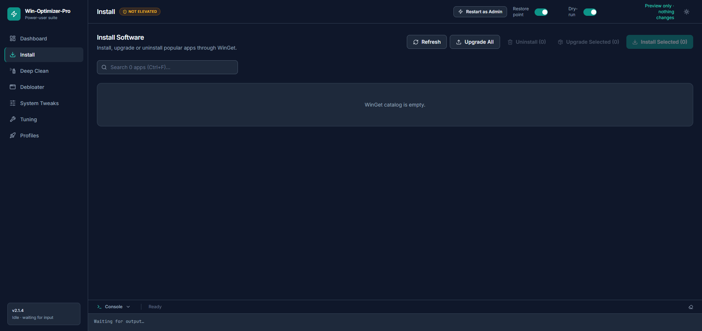
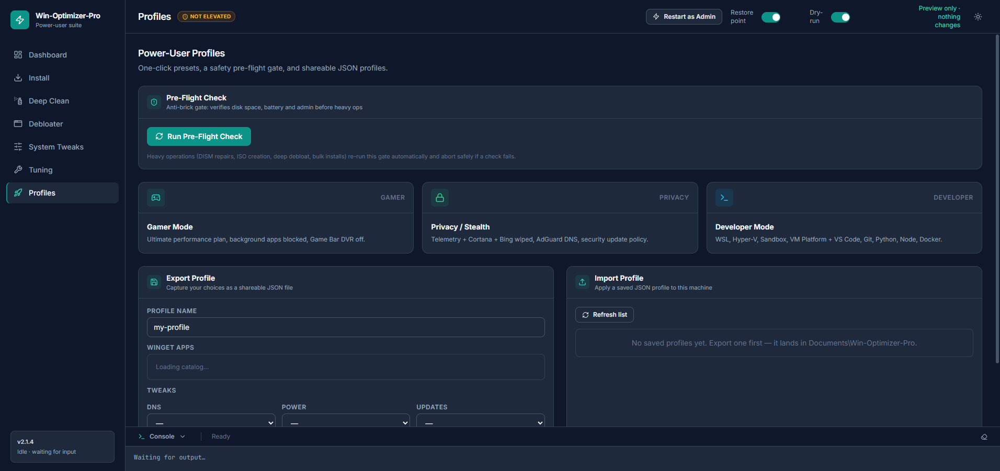
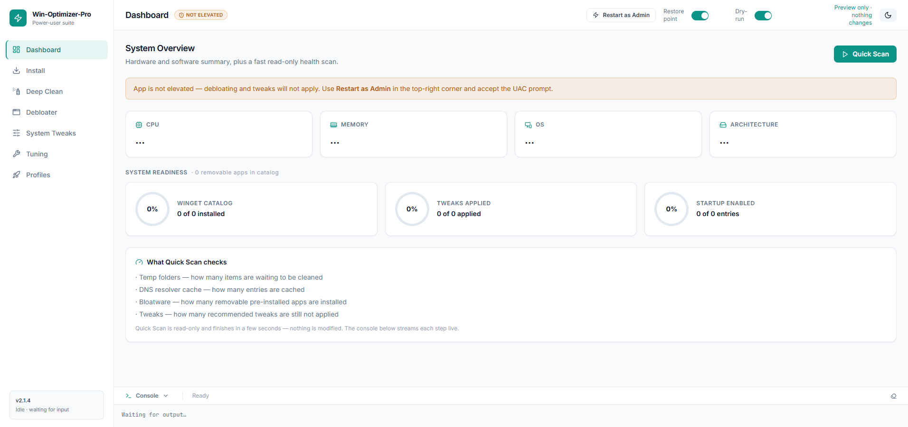

Win-Optimizer-Pro
A modern, enterprise-grade Windows optimizer, cleaner & debloater — powered by Rust, React and PowerShell.
A modern, enterprise-grade Windows optimizer, cleaner & debloater — powered by Rust, React and PowerShell.
One flat, clean app that automates cleanup, debloating, tweaking and system hardening — so you don’t have to click through ten different settings apps.
Blazing-fast temp, Windows Temp & Prefetch cleanup via a native robocopy sweep — 20,000 files in ~13 seconds.
Remove pre-installed bloat and unused apps in bulk, with an anti-brick preflight guard before anything changes.
Context menus, startup items, privacy settings, DNS presets and power plans — applied instantly.
Dry-run mode is ON by default. Create a System Restore point before debloating or applying tweaks.
Optimizer runs live inside a Windows Job Object that kills the whole process tree on close — Stop actually stops.
A clean teal/slate interface that matches your theme, plus a live console with real-time progress.







The fastest way — one line, straight from GitHub, no install needed:
irm https://raw.githubusercontent.com/karan5028ji/Win-Optimizer-Pro/main/run.ps1 | iex
Prefer a proper per-machine install with Start Menu + Desktop shortcuts? Grab the installer from the Releases page.
Release installers are code-signed by the SignPath Foundation.